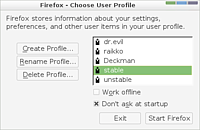

Profile
Achtung!
Da von Firefox alle sechs Wochen eine neue Version erscheint, kann dieser Artikel leider nicht – wie sonst in diesem Wiki üblich – mit einer bestimmten Ubuntu-Version getestet werden. Die Mozilla-Entwickler behalten sich vor, jederzeit neue Funktionen hinzuzufügen oder vorhandene wieder aus dem Programm zu entfernen. Unter solchen Umständen ist es nicht möglich, die Korrektheit der in diesem Artikel beschriebenen Informationen dauerhaft für eine Ubuntu-Version zu garantieren.
Der Browser Firefox erlaubt dem Benutzer verschiedene Profile anzulegen. Jedes Profil hat seine eigenen Einstellungen, Erweiterungen, Themes, Lesezeichen, Suchplugins und persönlichen Daten.
Das Benutzen von Profilen ist ideal, um mehreren Benutzern auf demselben Computer verschiedene Oberflächen zur Verfügung zu stellen. Jeder angemeldete Benutzer hat automatisch ein eigenes Profil. Mit dem Profilmanager ist es auch möglich, für einen Benutzer mehrere Profile anzulegen; beispielsweise um Erweiterungen erst zu testen, bevor man sie in sein Standard-Profil aufnimmt. Das ist auch deswegen sinnvoll, weil manche Erweiterungen Fehler enthalten, die ein Profil beschädigen können.
Es gibt auch noch den vom jeweiligen Programm unabhängigen Mozilla Profilmanager, der das Bearbeiten der Profile verschiedener Mozilla-Produkte ermöglicht.
Profilmanager¶
Der Profilmanager ist ein Fenster, in dem man Profile verwaltet - also hinzufügen, löschen, umbenennen oder auch wechseln kann.
Gestartet wird der Profilmanager über Alt + F2 oder über ein Terminal (Wichtig: Firefox vorher komplett schließen! Evtl. überprüfen, ob noch ein Prozess im Hintergrund läuft.):
firefox -ProfileManager
Eventuell muss der Pfad mit angegeben werden. Dies sähe zum Beispiel so aus:
/usr/bin/firefox -ProfileManager
Um ein Profil direkt zu starten:
firefox -P PROFILNAME

Profilordner¶
Das oben genannte Profil erstellt einen Profilordner. Beim ersten Starten von Firefox wird ein Standard-Profil namens "default" erstellt. Der Name des Ordners besteht aus dem Profilnamen mit einer vorangestellten zufälligen Zeichenkombination. Der Name des Profilordners könnte daher beispielsweise dwwlgxzt.default sein. Wenn weitere Profile angelegt werden, werden auch neue Profilordner angelegt. Jedes Profil besitzt seinen eigenen Ordner.
Pfad zum Profilordner¶
Der Profilordner befindet sich im versteckten Ordner ~/.mozilla/firefox/ im Homeverzeichnis.
Dateien im Profilordner¶
Die Ordner und Dateien, welche sich im Profilordner befinden, beinhalten alle Einstellungen, die ein Benutzer am Firefox vornehmen kann und sind somit wichtig.
Profiltausch¶
Seit Version 1.5 ist es spielend leicht Profile zu übertragen oder zu tauschen, um sich die Einrichtung auf einem anderen PC zu sparen oder um einfach nur aus Neugier den eigenen Firefox noch mehr zu verbessern. Wie das Ganze funktioniert, wird hier erklärt: Firefox-Forum: Profil-Tausch  .
.
Zusätzlich kann man anhand der Wiki-Anleitung Firefox plattformübergreifend nutzen.
Firefox-Instanzen parallel nutzen¶
Mit Hilfe des no-remote-Befehls kann man mehrere Firefox-Instanzen parallel zur eigentlichen Firefox-Instanz nutzen. Ermöglicht wird dies durch den Befehl -no-remote (teilweise auch als export MOZ_NO_REMOTE=1 bekannt). Ein Befehl sähe dann wie folgt aus:
firefox -no-remote -P PROFILNAME ## die Option -P startet den Profilmanager
Ein weiteres Beispiel, welches diese Möglichkeit nutzt, ist Portable Firefox.
Abgesicherter Modus (Safe-Mode)¶
Startet der Firefox nicht mehr oder nur noch mit Fehlermeldungen, hilft es oft den Firefox unter Umgehung aller Plugins und Erweiterungen im abgesicherten Modus zu starten. Dazu gibt man diesen Befehl ein:
firefox -safe-mode
Startet Firefox von selbst im abgesicherten Modus, bedeutet das, dass eine Erweiterung, ein Plugin oder ein Theme dieses Problem verursacht. Wie man dann weiter vorgehen kann, entnimmt man am besten dem Artikel Firefox/Safe-Mode.
Links¶
mozilla Firefox-Hilfe:
Benutzerprofilemozilla Firefox-Hilfe:
 Recovering important data from an old profile
Recovering important data from an old profile Firefox
 Übersichtsartikel
Übersichtsartikel
- Erstellt mit Inyoka
-
 2004 – 2017 ubuntuusers.de • Einige Rechte vorbehalten
2004 – 2017 ubuntuusers.de • Einige Rechte vorbehalten
Lizenz • Kontakt • Datenschutz • Impressum • Serverstatus -
Serverhousing gespendet von